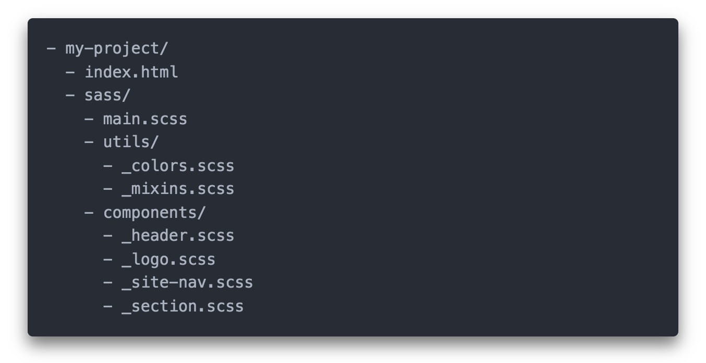

Писати увесь код в одному великому файлі незручно. Тому препроцесор SASS дозволяє зберігати стилі в окремих файлах і збирати їх як мозаїку. Такий модульний підхід до написання коду спрощує рефакторинг і підтримку кодової бази.
За замовчуванням SASS-компілятор створює CSS-файл для кожного Sass-файлу, який зустріне в проекті. Для того щоб після компіляції отримати всього один файл стилів, використовують фрагменти (partials) - звичайні Sass-файли, ім'я яких починається з нижнього підкреслення, наприклад _logo.scss. Нижнє підкреслення говорить компілятору про те, що це фрагмент і він не повинен компілюватися в окремий CSS-файл, а буде використаний в іншому Sass-файлі.
На ілюстрації зображена базова структура Sass-файлів в проекті. В папці sass є один головний файл main.scss, для якого після компіляції буде створений файл main.css, який ми підключаємо в index.html. В папках utils і components лежать фрагменти, які будуть частиною main.scss.
Для того щоб підключити фрагмент в інший Sass-файл, використовується директива @import. Файл main.scss з прикладу буде виглядати наступним чином.
@import 'utils/colors'; @import 'utils/mixins'; @import 'components/header'; @import 'components/logo'; @import 'components/site-nav'; @import 'components/section';
Коли компілятор зустрічає директиву @import, він підставляє код імпортованого файлу на місце імпорту. Після компіляції виходить один CSS-файл, скомпільований з декількох фрагментів.
Імена в імпорті:
Зверніть увагу на те, що ми використовуємо @import 'components/logo' у файлі main.scss. Під час імпорту фрагмента не потрібно вказувати розширення .scss і нижнє підкреслення, SASS-компілятор здогадається сам і знайде цей файл. Головне задати правильний відносний шлях.
Директива @extend використовується для наслідування (розширення) вже існуючих стилів. Застосуємо її, щоб створити компонент кнопки з декількома станами.
main.scss
.button { display: inline-flex; border-radius: 3px; font-size: 16px; padding: 10px 20px; color: white; background-color: gray; } .button-success { @extend .button; background-color: green; } .button-error { @extend .button; background-color: red; }
main.css
.button, .button-error, .button-success { display: inline-flex; border-radius: 3px; font-size: 16px; padding: 10px 20px; color: white; background-color: gray; } .button-success { background-color: green; } .button-error { background-color: red; }
Розширення (наслідування) не зробить копію стилів для кожного селектора, а грамотно додасть потрібні селектори у перелік до правила з наслідуваними стилями.
Але що, якщо ми хочемо розширити набір стилів, для якого не потрібний базовий селектор? Наприклад, якщо не потрібний селектор .button з попереднього прикладу, адже сам по собі він нічого не робить і не буде використаний в HTML.
Для таких випадків існує placeholder (плейсхолдер, заповнювач місця, шаблон) - довільне ім'я селектора з обов'язковим символом % на початку, наприклад %button.
main.scss
%button { display: inline-flex; border-radius: 3px; font-size: 16px; padding: 10px 20px; color: white; background-color: gray; } .button-success { @extend %button; background-color: green; } .button-error { @extend %button; background-color: red; }
main.css
.button-error, .button-success { display: inline-flex; border-radius: 3px; font-size: 16px; padding: 10px 20px; color: white; background-color: gray; } .button-success { background-color: green; } .button-error { background-color: red; }
Після компіляції будуть доступні селектори .button-success і .button-error, прив'язані до правила шаблону, а самого імені шаблону в CSS не буде.
Міксіни або домішки, як і плейсхолдери, дозволяють створювати готові набори властивостей, але з різними значеннями, залежно від отриманих аргументів під час виклику міксіна.
@mixin ім'я (параметри) {
// Властивості
}
Міксін оголошується за допомогою директиви @mixin та його імені. Далі можуть йти необов'язкові параметри в круглих дужках (самі дужки обов'язкові), а у фігурних - набір властивостей і значень.
Створимо міксін для встановлення тільки верхньої і нижньої рамки елемента, і зробимо колір рамки значенням, що може налаштовуватися. Параметри міксіна - це локальні SASS-змінні.
@mixin bordered($color) {
border-top: 1px solid $color;
border-bottom: 1px solid $color;
}
Додати стилі міксіна до селектора можна за допомогою директиви @include, після якої викликаємо міксін і передаємо значення для властивостей, що налаштовуються.
Після компіляції будуть тільки правила для селекторів .section і .header з доданим кодом з міксіна, коду оголошення самого міксіна не буде.
main.scss
@mixin bordered($color) { border-top: 1px solid $color; border-bottom: 1px solid $color; } .section { @include bordered(tomato); padding: 20px; } .header { @include bordered(green); min-height: 80px; }
main.css
.section { border-top: 1px solid tomato; border-bottom: 1px solid tomato; padding: 20px; } .header { border-top: 1px solid green; border-bottom: 1px solid green; min-height: 80px; }
Увага:
Міксін відрізняється від плейсхолдера тим, що властивості дублюються в кожен селектор. Все тому, що значення властивостей міксіна можуть бути різними, залежно від переданих аргументів під час виклику @include міксін(аргументи). У той час як властивості та їх значення в плейсхолдері завжди однакові.
Директива @each - це цикл, який виконає тіло директиви для кожного значення зі списку. Це дозволяє скоротити кількість коду, який необхідно написати вручну.
@each <значення> in <список значень> {
// Тіло директиви @each
}
Наприклад, необхідно створити серію селекторів для елементів з фоновими зображеннями. В CSS це виглядає наступним чином. Занадто багато повторюваного коду.
.dog-icon {
background-image: url('../images/dog.png');
}
.cat-icon {
background-image: url('../images/cat.png');
}
.bird-icon {
background-image: url('../images/bird.png');
}
.turtle-icon {
background-image: url('../images/turtle.png');
}
Використовуючи директиву @each, можемо досягнути такого самого результату, записавши наступний Sass-код, який буде скомпільований в CSS з попереднього прикладу.
@each $animal in dog, cat, bird, turtle {
.#{$animal}-icon {
background-image: url('../images/#{$animal}.png');
}
}
Директива @each встановлює $animal у кожне зі значень списку тварин і для кожного створює код, записаний в тілі директиви - CSS-правило з селектором класу і набором властивостей.
Інтерполяція:
Для того щоб підставити значення змінної $animal, необхідно використовувати інтерполяцію #{$ім'я_змінної}, оскільки ми створюємо рядки. Без інтерполяції ім'я змінної не буде замінено на її значення під час компіляції.